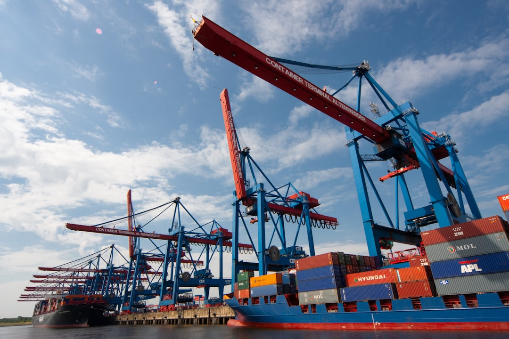

공급망 재편 수혜 기업의 실제 조건…현대코퍼레이션 해외 신시장 전략이 보여주는 것

현대코퍼레이션은 글로벌 공급망 재편 흐름에서 중동·아프리카·동남아시아 등 신흥 시장 공략을 강화하고 있다. 2024년 기준 현대코퍼레이션의 신흥 시장 매출 비중은 전체의 약 38%로, 2022년 대비 11%p 상승했다. 철강·화학·산업재 분야에서 중국 공급망을 대체하는 중간재 무역상 역할을 확대 중이다.
미국의 대중 관세(평균 145%대)와 EU의 공급망 실사 의무화(CSDD)가 맞물리면서 글로벌 제조업체들이 중국 외 소싱처를 찾는 수요가 2024년 하반기부터 뚜렷하게 증가했다. 한국 종합상사들은 이 흐름에서 '비(非)중국 소싱 중개자' 포지션을 강화하려 하지만, 실제 물량 전환에는 평균 18~24개월의 검수·인증 기간이 필요하다.
공급망 재편 수혜를 실제로 이익으로 전환한 기업들의 공통점은 ①현지 창고·물류 인프라 직접 보유 ②3년 이상의 장기 공급 계약 체결 ③소재 스펙 관리 역량 내재화다. 단순 중개 구조로는 마진이 2~5%에 불과하고, 인증·물류를 내재화한 경우 마진이 8~15%로 뛴다.
한국의 종합상사·중간재 무역 기업들이 주목하는 신흥 시장은 인도(전력·철강 수요), 사우디·UAE(석유화학 다각화), 베트남·인도네시아(전자 부품 조립 허브)다. 이 4개 시장에 동시에 현지 네트워크를 보유한 국내 기업은 현대코퍼레이션·포스코인터내셔널·LX인터내셔널 등 5개사 미만이다.
공급망 재편 수혜를 입에 올리는 기업은 수십 개지만, 실제로 '중국 공급망에서 이탈한 글로벌 바이어의 재계약'을 받아낸 기업은 극히 소수다. 핵심 차이는 바이어가 요구하는 스펙·인증·납기를 맞출 수 있는 '검증된 대체 소싱 역량'의 유무다. 선언이 아니라 계약서가 수혜의 증거다.
중간재 무역의 본질은 '정보 비대칭 해소'다. 공급망 재편 국면에서는 '어디서 무엇을 신뢰할 수 있는 품질로 살 수 있는가'에 대한 정보 비대칭이 최고조에 달한다. 이 정보를 선점한 상사·브로커·플랫폼이 프리미엄 마진을 가져간다. 지금은 소재 정보 자산이 가장 빠르게 가치가 높아지는 시기다.
현지 인프라 보유 종합상사: 현대코퍼레이션·포스코인터내셔널처럼 신흥 시장에 창고·현지 법인·검수 역량을 보유한 기업은 단순 주문 중개가 아닌 '재고 보유 공급자'로 포지셔닝이 가능해 프리미엄 마진(8~15%)을 확보할 수 있다.
비중국 소재 가공·인증 보유 중소기업: EU CSDD·미국 IRA·FEOC 요건에 대응할 수 있는 ESG 이력과 성분 인증을 보유한 중소 소재사는 글로벌 바이어의 '즉시 활용 가능한 대체 공급자'로 계약 기회가 열린다.
단순 중개 무역 구조 상사: 현지 재고·검수·물류 없이 주문만 중개하는 상사는 글로벌 바이어가 직접 소싱처와 연결하는 디지털 조달 플랫폼(Tridge·Kompass 등)으로 대체되는 속도가 빠르다. 2~5% 마진은 플랫폼 수수료 수준으로 수렴하고 있다.
인증 없는 신흥 시장 소재 공급사: 인도·베트남 현지 소재 기업들이 경쟁자로 부상하고 있지만, ISO·RoHS·REACH 인증을 갖추지 못한 경우 글로벌 바이어의 QA 심사에서 탈락한다. 인증 취득에 평균 14~20개월이 소요돼 시간이 경쟁 우위다.
종합상사·무역 기업이라면 지금 포트폴리오에서 '중국 공급망 의존 중개 품목'과 '비중국 소싱 가능 품목'을 분리해, 후자에 현지 재고·인증 투자를 집중해야 한다. 전환 속도가 늦으면 글로벌 바이어의 대체 소싱 결정이 자사를 배제한 채로 완료된다.
투자자는 '공급망 재편 수혜'를 표방하는 기업의 실제 지표로 ①신흥 시장 장기 계약(3년 이상) 수 ②현지 창고 보유 여부 ③소재별 인증 보유 수를 확인해야 한다. 매출 성장보다 마진 방어력이 진짜 수혜 여부를 가른다.
실제 조달 현장에서는 — 글로벌 바이어들이 '비중국 소싱 확약서'와 함께 'ESG 추적 가능성 보고서(Traceability Report)'를 동시에 요구하기 시작했다. 소재가 어느 광산에서 채굴됐고 어떤 경로로 가공됐는지를 문서로 증명하지 못하면, 가격·품질이 아무리 좋아도 납품 자격을 얻지 못하는 시대가 됐다. 이 문서화 역량이 2026년 이후 수혜의 실질 기준이 된다.
이 포스팅은 쿠팡 파트너스 활동의 일환으로 수수료를 제공받습니다.